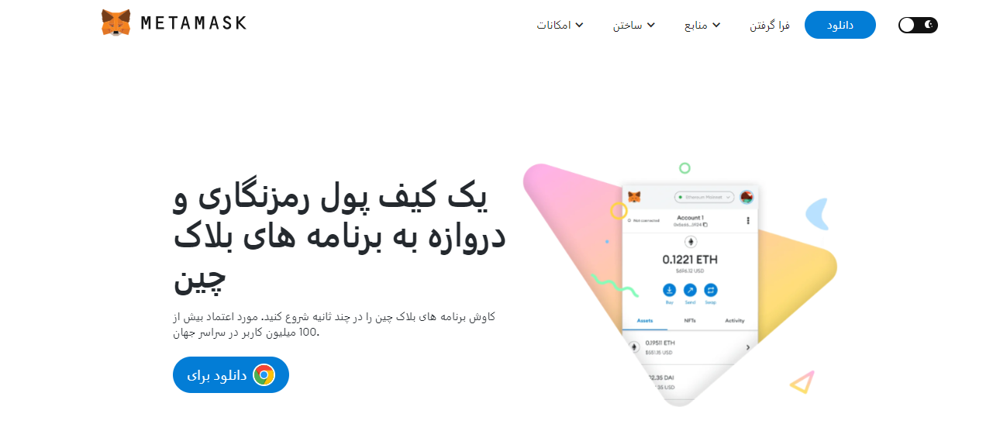

پسوند MetaMask® - پسوند مرورگر
پسوند MetaMask® - مرورگر افزونه. کشف کنید پسوند metamask extension و تجربه Web3 خود را ارتقا دهید. تعامل یکپارچه با برنامه های غیرمتمرکز، مدیریت دارایی های رمزنگاری شده و کاوش در دنیای بلاک چین به راحتی. پسوند MetaMask یک کیف پول کریپتو افزونه مبتنی بر مرورگر دسکتاپ است که ذخیره و مدیریت تمام توکن ها و سکه های رمزنگاری مبتنی بر ETH را برای علاقه مندان به ارزهای دیجیتال ساده و آسان می کند. این به کاربران خود اجازه می دهد تا به طور یکپارچه با dApps (برنامه های غیرمتمرکز)، شبکه اتریوم و سایر شبکه های بلاک چین سازگار با EVM تعامل داشته باشند. افزایش یافته است متاماسک رابط کاربری موبایل ناوبری وب 3 را در حال حرکت آسان تر و تکامل یافته می کند پسوند MetaMask انتخابهای حریم خصوصی به شما نمایندگی بیشتری بر روی دادههایتان میدهد. امیدواریم از تجربه جدید لذت ببرید! و اگر درخواست خاصی دارید، در اینجا به ما اطلاع دهید. خبرنامه ما را دریافت کنید. به خواندن آخرین داستان های ما ادامه دهید. توسعه دهندگان،metamask extension برای کروم یک مرورگر است افزونه که کاربران را قادر می سازد تا دارایی های دیجیتال مبتنی بر اتریوم را مدیریت کنند و با برنامه های غیرمتمرکز (DApps) در شبکه اتریوم تعامل داشته باشند. این به عنوان پلی بین مرورگر و بلاک چین اتریوم عمل می کند و به کاربران اجازه می دهد چندین حساب اتریوم ایجاد و مدیریت کنند، به طور ایمن ذخیره کنند و